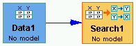

The search box in the main workspace area looks like this:

if the search is being conducted over a data set, or this:

if the search is being conducted directly over a graph (as a source of true conditional independence facts, to see how the algorithm behaves ideally).
Tetrad has a variety of search algorithms to assist in
searching for causal explanations of a body of data.
It should be noted that the Tetrad search procedures are exponential in the worst case (when all pairs of variables are dependent conditional on every other set of variables.) The search procedures may take a good bit of time, and there is no guarantee beforehand as to how long that will be.
These search algorithms are
different from those conventionally used in statistics.
- There are several search algorithms, differing in the assumptions they make.
- Many of the search algorithms allow the user to specify background information that will be used in the search procedure. In many cases the search results will be uninformative unless such background assumptions are explicitly made. This design not only provides for more flexibility, it also encourages the user to be conscious of the additional assumptions imposed in deriving a model from data.
- Even with background assumptions, data often do not determine a unique best or robust explanation. The search algorithms take in data and return information about a collection of alternative causal graphs that can explain features of the data. They do not usually return a unique graph, although they sometimes will if sufficient prior knowledge is specified. In contrast, if one searches for a regression model of the influences of a set of variables on a selected variable, a regression model will certainly be found (provided there are sufficient data points), specifying which variables influence the target and which do not.
- The algorithms are in some respects cautious. Search algorithms such as FCI and PC , described below, will often say, correctly, that it cannot be determined whether or not a particular variable influences another.
- The algorithms are not just useful guesses. Under explicit assumptions (which often hold at best only approximately), the algorithms are "pointwise consistent"--they converge almost surely to the correct answer. The conditions for this sort of consistency of the seaarch procedures are described in the references. Conventional model search algorithms--stepwise regression, for example--have such guarantees only under very strong prior assumptions about the causal structure.
- The output of the search algorithms provides a variety of indirect information about how much the conclusions of the algorithm can be trusted. They can, for example, be run repeatedly for a variety of specifications of depErrorsAlpha values in their statistical tests, to gain insight about robustness. For search algorithms such as PC, CCD, GES and MimBuild, described below, if the search algorithms return "spaghetti"--a highly connected graph--that indicates the serach cannot determine whether all of the connected variables may be influenced by a common unmeasured cause. If the PC algoirthm returns an edge with two arrowheads, that indicates a latent variable may be acting; if searches other than CCD return graphs with cycles, that indicates the assumptions of the search algoirthm are violated.
- Some of the search procedures are robust against common difficulties in sampling designs--they give correct, but reduced information in such cases. For example, the FCI algorithm allows that there may be unobserved latent common causes of measured variables--or not--and that the sample may have been formed by a process in which the values of measured variables invlucne whether or not a unit is included in the sample (sample selection bias). The CCD algorithm allows that the correct causal structure may be "non-recursive"--essentially a cyclic graphical mode, a folded up time series.
- The output of the algorithms is not an estiamted model with parameter values, but a discription of a class of causall graphs that can explain statistical features of the data considered by the search procedures. That information can be converted by hand into particular graphical models in the form of directed graphs, which can then be estimated by the program and tested.
The search procedures available are named:
- PC - Searches for Bayes net or SEM
models when it is assumed there is no latent (unrecorded) variable that
contributes to the association of two or more measured variables.
- CPC - Variant of PC that improves arrow orientation accuracy.
- PCD - Variant of PC that can be applied to deterministic data.
- FCI --which performs a search similar to PC but allowing that there may be latent variables.
- CCD--for searching for non-recursive SEM models (models of feedback systems using cyclic graphs) without latent variables
- GES -- Scoring search for Bayes net or SEM models when it is assumed there is no latent (unrecorded) variable that contributes to the association of two or more measured variables.
- MBF -- Searches for the Markov blankets DAGs for a given target T over a list of variables <v1,...,vn,T>.
- CEF - Variant of MBF that searches for the causal environment of a T (i.e., parents and children of T).
- Structural EM -
- MimBuild--for searching for latent structure from the output of Build Pure Clusters or Purify Clusters
- BPC --for searching for sets of variables that share a single latent common cause
- Purify Clusters--for searching for sets of variables that share a single latent common cause
Inputs to the Search Box
There are two possible inputs for a search
algorithm: a data set or a graph. If a graph is input, the program
allows searches the program computes implied independence and
conditional independence relations and allows you to conduct any search
that uses only such constraints--the PC, FCI and CCD algorithms.
Why would you apply a Search procedure to a
model you already know? For a very important reason: The Search
procedures will find the graphical representation of alternative
models to your model that imply the same constraints.
The more usual use of the search algorithms requires a data set as
input. Here is an example.
- Select the Search button.

- Click in the workbench to create a Search
icon.
- Use the Flow Charter button to connect the
Data icon to the Search icon.

- Double-click the Search icon to choose an
search procedure.

Selecting a Search procedure
Tetrad offers the following choices of search
algorithms. For more details about the assumptions and parameters
needed for each algorithm, click in the respective links.
There are two main classes of algorithms. The
first one is designed for general graphs with or without assuming the
possibility of hidden common causes:
- PC algorithm:
this method assumes that there are no hidden common causes between observed
variables in the input (i.e., variables from the data set, or observed variables
in the input graph) and that the graphical structure sought has no cycles.
- FCI algorithm:
this method does not assume that there are no hidden common causes between
observed variables in the input (i.e., variables from the data set, or observed
variables in the input graph); it does assume that the graphical strucutre
sought has no cycles.
- CCD algorithm:
this method assumes there are no hidden common causes; it allows cycles; it
is only correct for discrete variables under a restrictive assumtptions
- GES algorithm:
same assumptions as the PC algorithm, except that this one performs search
by scoring a graph by its asymptotic posterior probability.
The second class concerns algorithms to search
for latent variable structural equation models from data and
background knowledge.
- MIM Build algorithm:
learns the causal relationships among latent variables, when the true (unknown)
data generation process is believed to be a pure measurement/structural model.
- Build Pure Clusters
algorithm: a complement to MIM Build and Purify, this algorithm learns
the causal relationships from latent variables to observed variables, when
the true (unknown) data generation process is believed to be contain a pure
measurement/structural submodel--i.e. a model in which each
- Purify algorithm:
given a measurement model, this method searches for a submodel in which there
are no every measured variable is influenced by one and only one latent variable.
Select the desired algorithm that meets your assumptions from the
Search list. An initial dialog box showing the search parameters you
can set is displayed. The following figure illustrates the one that is
displayed when PC Algorithm is selected.

After the proper parameters are set, if the user checks the box
"Execute searches automatically", the automated search procedure will
start when the OK button is clicked. The respective Help button can be
used to get instructions about that specific algorithm. The next window
displays the result of the procedure, and can also be used to fire new
searches. The following figure illustrates an output for the PC
algorithm.

Inserting background knowledge
Besides the assumptions underlying each
algorithm, another source of constraints that can be used by the search
procedures to narrow down the search and return a more informative
output is making use of background knowledge provided by the user. To see how to specify background knowledge for a search algorithm, see Editing Knowledge.
Assumptions
A search procedure is pointwise consistent if as the sample size
increases without bound, the output of the algorithm converges with
probability 1 to
true information about the data generating structure. For all of the
Tetrad search algorithms, available proofs of pointwise consistency,
assume at least the following:
1. The sample is i.i.d--the probaiblity of any unit in a population
being sampled is the same as any other, and the joint probability
distribution of the variables is the same for all units.
2. The joint probability distribution is locally Markov. In acyclic
cases, this is equivalent to a simpler "global" Markov condition:
that a variable is independent of all variables that are not its
effects conditional on the direct causes of the variable in the causal
graph (its "parents"). In cyclic cases, the local Markov condition has
a related but more technical definition. (See Spirtes, et al., 2000).
3. All of the independence and conditional independence relations in
the joint probability distribution are consequences of the local Markov
condition for the true causal graph.
In addition, various specific search algorithms impose other assumptions. Of course,
the search algorithms may give correct in information when
these assumptions do not strictly hold, and in some cases will do so when they
are grossly violated--the PC algoirthm, for example, will sometimes correctly
identify the presence of unrecorded common causes of recorded variables.
Types of Searches: